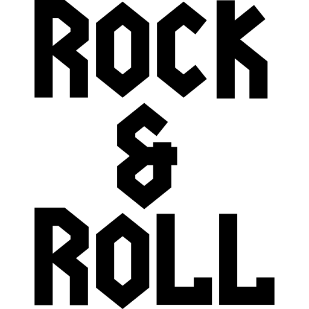

Sumérgete en el mundo del rock and roll y vive la experiencia de la música que marcó generaciones.
Explora la Historia del Rock
Desde los clásicos hasta las nuevas tendencias, descubre cómo el rock sigue evolucionando.
Estos son algunos de los videos de las mejores Bandas de Rock.

🎸 ¡Bienvenidos a Wiky-Music! 🤘
Este es el Top 3
Novedades
AC/DC

Falta cada vez menos para el comienzo de la gira “Power Up Tour” de AC/DC. La primera noche será el
17 de mayo en el Veltins Arena de Gelsenkirchen, Alemania. Lo más importante es el regreso de Brian Johnson
después del reemplazo en manos de Axl Rose en la gira anterior por sus problemas de audición. Angus Young,
Stevie Young en guitarra rítmica (en lugar de Malcolm Young), Matt Laug en la batería y el bajista Chris
Chaney completarán la formación.
Esta gira recorrerá Alemania, Italia, Países Bajos, Austria, Suiza, y tendrá dos importantes shows en el
famoso estadio Wembley londinense y también pasará por Eslovaquia, Bélgica, Francia y terminará en Irlanda,
el 17 de agosto, con una presentación en Dublín.
Los detalles de los ensayos:
Los integrantes de AC/DC están ultimando los detalles para volver a la ruta. En las últimas horas, se
conoció una foto en sus redes sociales donde aparecen los músicos ensayando en su sala. “En el estudio,
preparándonos para el “Power Up Tour”, que comienza en Gelsenkirchen, Alemania, ¡En sólo una semana!”, fue
el mensaje que acompañó la imagen. Este posteo llenó de ansiedad a los fans europeos que ya lo quieren ver
al grupo en acción.
LED ZEPELLIN

Finalmente podremos ver el primer documental oficial de Led Zeppelin. Luego de que un primer corte de Becoming Led Zeppelin se estrenara en el festival de cine de Venecia en septiembre del 2021, los planes para distribuir la cinta se estancaron, dejando a sus admiradores ansiosos por verla. Ahora, la película ha sido adquirida por Sony Classics Pictures y es solo cuestión de tiempo que llegue a cines de Norteamérica, Latinoamérica, el Sudeste Asiático (a excepción de Japón), Oriente Medio y Benelux. No se ha revelado una fecha de estreno aproximada para la película, pero los fanáticos de Zeppelin han esperado durante años. El proyecto se anunció por primera vez en el 2019 después de haber sido comenzado el año anterior. Te podría interesar: El misterio detrás de la portada de Led Zeppelin IV ha sido resuelto Se promociona como el único documental que cuenta con la participación total de los miembros de la banda y presenta nuevas entrevistas con Jimmy Page, John Paul Jones y Robert Plant, así como entrevistas rara vez vistas con el fallecido John Bonham. “Hemos pasado años diseñando esta película para vivirla en la pantalla grande con el mejor sonido posible”, dijo el director Bernard McMahon. La productora y coguionista Allison McGourty agregó: “Sony Pictures Classics son los socios perfectos porque creen firmemente en la experiencia teatral y les apasiona brindar a los millones de fanáticos de Led Zeppelin la oportunidad de verlos y escucharlos en las mejores pantallas y sistemas de sonido en el mundo”. La versión de la película que llegará a cines se ha extendido con metraje adicional desde la versión “en proceso” que fue proyectada en Venecia. El anuncio de Sony Classics revela que el corte “completado” presenta “una mezcla de sonido completamente nueva y material recién descubierto de los cuatro miembros de la banda”
NIRVANA

Finalmente podremos ver el primer documental oficial de Led Zeppelin. Luego de que un primer corte de Becoming Led Zeppelin se estrenara en el festival de cine de Venecia en septiembre del 2021, los planes para distribuir la cinta se estancaron, dejando a sus admiradores ansiosos por verla. Ahora, la película ha sido adquirida por Sony Classics Pictures y es solo cuestión de tiempo que llegue a cines de Norteamérica, Latinoamérica, el Sudeste Asiático (a excepción de Japón), Oriente Medio y Benelux. No se ha revelado una fecha de estreno aproximada para la película, pero los fanáticos de Zeppelin han esperado durante años. El proyecto se anunció por primera vez en el 2019 después de haber sido comenzado el año anterior. Te podría interesar: El misterio detrás de la portada de Led Zeppelin IV ha sido resuelto Se promociona como el único documental que cuenta con la participación total de los miembros de la banda y presenta nuevas entrevistas con Jimmy Page, John Paul Jones y Robert Plant, así como entrevistas rara vez vistas con el fallecido John Bonham. “Hemos pasado años diseñando esta película para vivirla en la pantalla grande con el mejor sonido posible”, dijo el director Bernard McMahon. La productora y coguionista Allison McGourty agregó: “Sony Pictures Classics son los socios perfectos porque creen firmemente en la experiencia teatral y les apasiona brindar a los millones de fanáticos de Led Zeppelin la oportunidad de verlos y escucharlos en las mejores pantallas y sistemas de sonido en el mundo”. La versión de la película que llegará a cines se ha extendido con metraje adicional desde la versión “en proceso” que fue proyectada en Venecia. El anuncio de Sony Classics revela que el corte “completado” presenta “una mezcla de sonido completamente nueva y material recién descubierto de los cuatro miembros de la banda”
Contacto
Si tienes alguna consulta no dudes en contactarnos. Esperamos tu mensaje.
Encontra Wiki-Music en:
Direccion: Jujuy 2750, Córdoba, Argentina
Teléfono: 351-2209813
Ig: @institutoaccinfo@wikimusic.com.ar